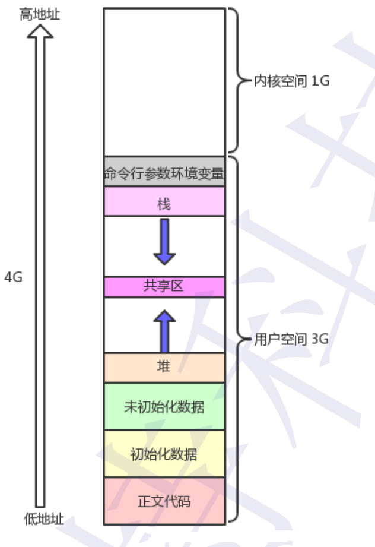
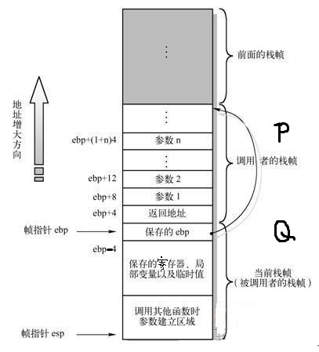
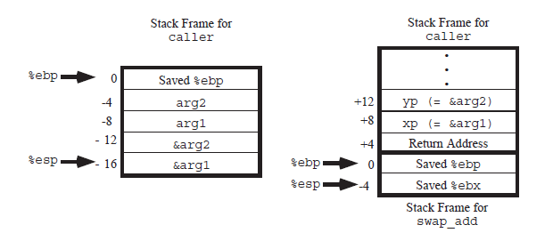

函数调用在第三章第七章均有涉及，故专门总结一波函数调用栈帧的变化
1、熟悉一下程序的进程空间 ，即对进程如何使用内存

先讨论32位的计算机，计算机物理内存的大小是固定的，就是计算机主板内存槽上的实际物理内存，cpu可以直接进行寻址，物理内存的容量是固定的，但是寻址的空间取决于cpu地址线的数量。在32位系统上，线性地址空间可达4G（2^32）；这4G一般是按照3：1的比例进行分配，用户进程享有3G的空间，而内核独自享有剩下的1G内存
2、谈谈栈帧的概念
栈帧(stack frame)，机器用栈来传递过程参数，存储返回信息，保存寄存器用于以后恢复，以及本地存储。为单个过程(函数调用)分配的那部分栈称为栈帧。
栈帧其实 是两个指针寄存器，寄存器%ebp为帧指针（指向该栈帧的最底部），而寄存器%esp为栈指针（指向该栈帧的最顶部），当程序运行时，栈指针可以移动(大多数的信息的访问都是通过帧指针的，换句话说，就是如果该栈存在，%ebp帧指针是不移动的，访问栈里面的元素可以用-4(%ebp）或者8(%ebp)访问%ebp指针下面或者上面的元素)。
总之简单 一句话，栈帧的主要作用是用来控制和保存一个过程的所有信息的。栈帧结构如下所示：

大概解释：假设过程P（调用者）调用过程Q（被调用者），则Q的参数放在P的栈帧中。另外，当P调用Q时，P中的返回地址被压入栈中，形成P的栈帧的末尾 （返回地址就是当程序从Q返回时应该继续执行的地方）。Q的栈帧从保存的帧指针的值开始，后面到新的栈指针之间就是该过程的部分了。
3、函数具体调用示例
源代码（忽略主函数）:
1 | int swap_add(int* xp,int* yp) { |
经过汇编之后caller部分的代码为：
1 | caller: |
这段代码先保存了%ebp的一个副本，将新的过程（该函数的ebp）的ebp设置为栈帧的开始位置。然后将栈指针减去24，从而在栈上分配了24字 节的空间（你应该思考一下为什么是24字节,记得有两个为保存的寄存器），然后是初始化两个局部变量，计算两个局部变量的地址并存入栈中，形成了函数swap_add的参数。将这些 参数存储到相对于栈指针偏移量为0和+4的地方，留待稍后的swap_add调用访问。然后调用swap_add
1 | swap_add: |
说明三点，1、说明一点程序在执行到swap_add的代码之前，也就是在执行call语句已经把返回地址压入栈中，包括%esp-4. 2、最后一部 分的popl %ebx popl %ebp。它的作用是恢复了之前存储的栈帧指针的值. 3、返回值是存入了%eax中，在接下来的调用程序caller中直接访问该寄存器
整个过程的栈变化如下所示
